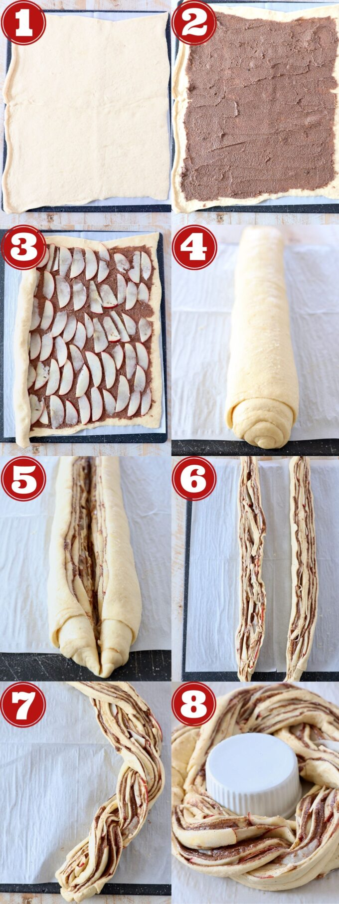
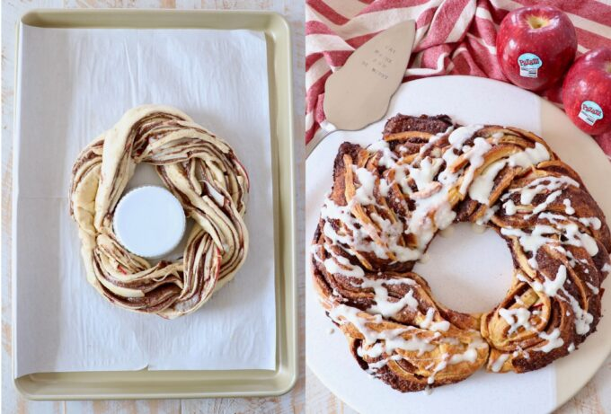
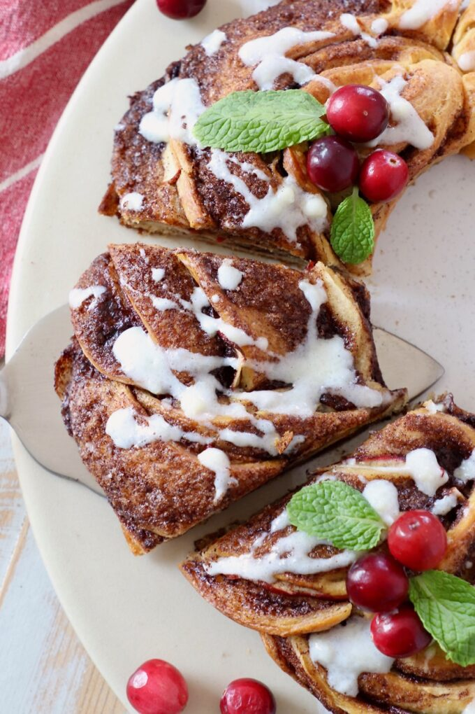

Ingredients you'll need

- Crescent roll dough — canned dough or dough sheets both work; sheets are easier since you skip pressing the perforations together.
- Granulated sugar
- Brown sugar
- Ground cinnamon
- Unsalted butter — soften alongside the cream cheese at least 30 minutes before starting.
- Pazazz apples — sweet, tart, and extra crispy.
- Cream cheese
- Milk
- Vanilla extract
- Powdered sugar
Step by step instructions

- Roll out the crescent roll dough. Place a large piece of parchment paper on a flat work surface. Overlap both sheets of dough slightly and press the seams together to form one large rectangle.
- Top with the cinnamon sugar butter. Combine softened butter with granulated sugar, brown sugar, and ground cinnamon, then spread evenly across the dough.
- Add the apples. Core and thinly slice one Pazazz apple. Lay the slices over the cinnamon sugar butter in a single, non-overlapping layer.
- Roll it up. Roll the dough up tightly over the apples and cinnamon butter into a tube.
- Slice it in half. Use a sharp knife to slice lengthwise through the middle of the tube.
- Separate the two halves. Pull the halves apart, keeping the cinnamon butter and apples facing up on both.
- Braid them together. Lift one half over the other, then vice versa, until it forms one long braid.
- Form the wreath. Join the ends of the braid, transfer to a baking sheet, and bake at 350°F for 20–25 minutes until golden brown.

Ready to serve

